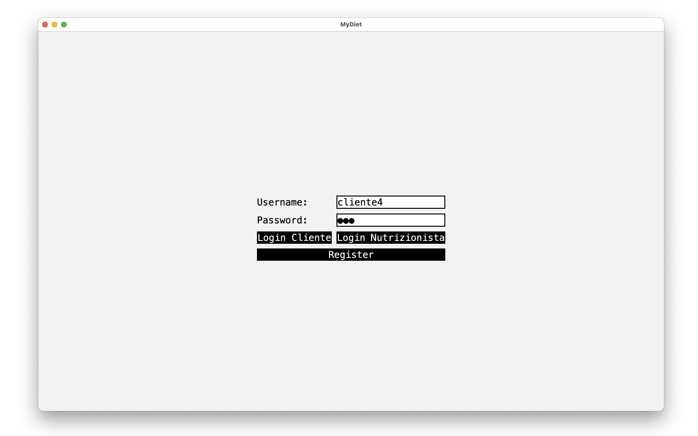

MyDiet
A Java application for the daily diet managment



Project description
MyDiet is a Java application developed for the final exam of the database's course. The goal of MyDiet is helping people to keep track of their calories intake and their daily nutritionals goals.
The main features are:
- Meals managment and relatives calories
- Integration whit a DB in order to keep track of all users datas.
- Interactive Gui based on Java swing
The application is based on a MVC architecture.
Languages used:
MySQL for DB. Java Swing for both frontend and backend
Link repo: GitHub